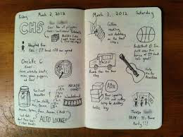

Lab Book

This course require that you keep lab notes. Scientists and engineers record their daily work, activities, observations in a lab book. Do not mingle your lab notes with your lecture notes. Programmers should have one, too, so that if anything goes wrong, this documentation can help you reconstruct the past and convince others of your position.
the partner information. Enter the following information on this page: name, cell phone, social-media contact if you prefer this over email, and "daily" email address.
the week's cover page. For each week, enter a note describing your plans for the week and write down an estimate of how much time this work will take.
- the meeting pages, which have the following shape:
date/time: _______________________________
place: ___________________________________
goal: ____________________________________
notes: ___________________________________
__________________________________________
__________________________________________
__________________________________________
duration: ________________________________
NEXT : (date/time/place of next meeting)
the week's conclusion. This is mostly for your own consumption. Sum up how much time you needed.
If your partner doesn't show up for the meeting, make a note. Also record what actions you undertook to reach your partner. If you sent a reminder email, keep a copy.
Note You won’t get credit for accurate time estimates. The point is to learn to estimate how much time real tasks take. Acquiring this skill is critical for developers as well as people who wish to manage developers. There is nothing like practice to develop this skill.